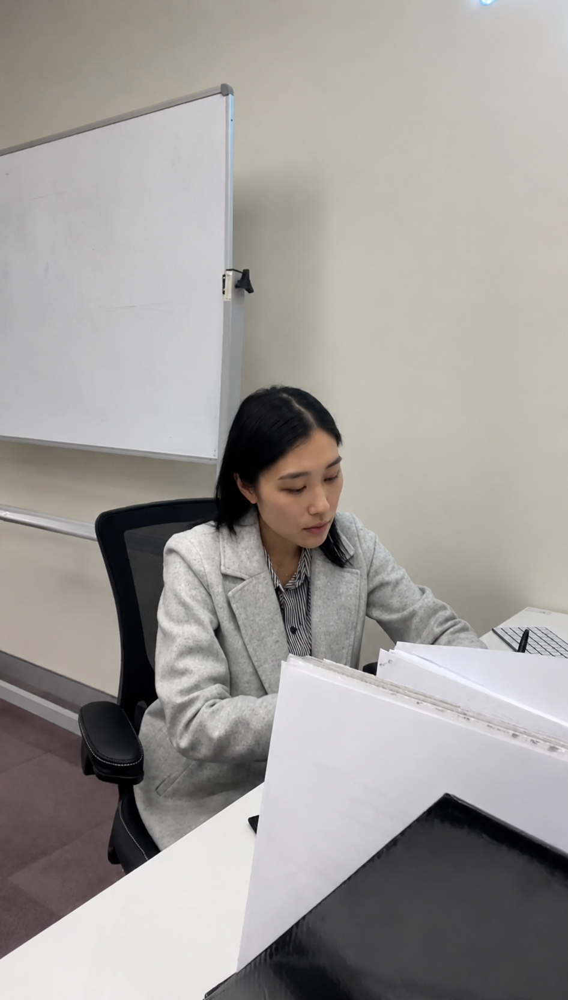

About Us
A boutique studio, on purpose
Medium C stays small so the person who plans your strategy is the same person who writes the caption and answers your call.
How Medium C came about
Medium C started with a fairly simple observation: most small and medium businesses don't need a big agency retainer, a jargon-filled strategy document, or a rotating cast of junior account managers. They need someone capable to just handle it, consistently, month after month, in a way that sounds like them.
We work with businesses across professional services, trades and construction, health, property, and B2B, because good marketing fundamentals don't actually change that much from industry to industry. What changes is tone, timing, and knowing which details matter to your particular customers. That's the part we spend time getting right before anything goes out under your name.
We're not the agency for you if you want a twelve-person team and a quarterly board deck. We are the studio for you if you want marketing that's genuinely looked after by someone who cares whether it's working.

Meet the founder
Hi, I'm Cloe
I've been working in digital marketing for around five years, across B2B and B2C businesses, from managing social media and email campaigns to websites, content and reporting. Before starting Medium C, I worked in-house where I got to see how much goes into keeping a business visible and bringing in new customers. I started Medium C because I wanted to help small and growing businesses get that same level of marketing support without needing to hire a full-time marketing team.
When you work with me, you work directly with me. I handle both the planning and the day-to-day work, so you're not passed between different people or left wondering what's happening with your marketing. I also keep my client list small so I can give each business the time and attention it deserves.
Outside of client work, you'll usually find me trying a new café, planning my next trip or spending time with family and friends.
Cloe
Founder, Medium C
How we work
A few things that don't change from client to client
-
01
You always know who you're talking to
No account managers relaying messages back and forth. You deal directly with the person doing the work.
-
02
We learn the business before we write a word
A proper onboarding conversation, not a template questionnaire, so the content sounds like you and not like a stock agency voice.
-
03
Reporting is honest, not decorative
If something isn't working, we'll say so and change tack, rather than dressing up flat numbers in a nice-looking chart.
-
04
We keep client numbers deliberately limited
Being boutique is a choice, not a stage we're trying to grow out of. It's how the work stays good.
Keen to work together?
Get in touch and let's see whether Medium C is the right fit for your business.
Contact Us